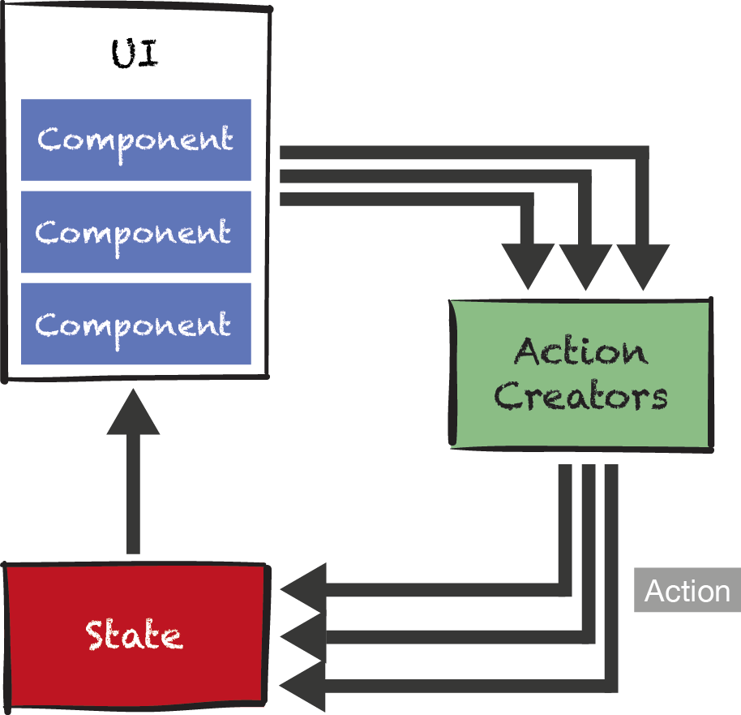

Universal Rendering with React, Redux, and Flow
Webtechcon 2016


Single-Page Applications (SPAs): Moving your Application into the Browser
- Single-Page per Application (or Module)
- Optionally runs without any Server side code as a static Web Page
- Offline
- Data close to Application Code: Latency low, like Desktop App
- Browser can even store data in Cliebt side DBs
First approaches to SPAs
- Templates on Client Side
- Applications structured in components or controllers
- No longer a loose collection of JavaScript snippets

Early options of JavaScript MVC/MVVM SPA frameworks
- Backbone
- Angular 1
- Ember.js
Problems of MVC/MVVM Frameworks with Observer-Pattern

React
- Framework used to build Facebook, Netflix, and many more
- Minimal API
- Component based
- Components encapsulate template and logic
- Templates are written in JavaScript, plus JSX extension for HTML style
- One way, data binding
- Abstraction from DOM using virtual DOM
- Model can be anything
f(model) -> UI
Contrainers and Views
- Top Level Components are called Containers or Pages
- hold and manage State
- contain UI logic
- Other Components called Views
- Data and Control only flows in these hierarchies

Hello World React
class HelloMessage extends React.Component {
render() {
return <div>
<input value={this.state.greeting} ref="in"
onChange={(event) => this.updateModel(event)} />
{this.state.greeting}, World
<button onClick={() => this.reset()}>Clear</button>
</div>;
} constructor(props) {
this.state = {greeting: this.props.greeting};
}
updateModel(event) {
this.setState({greeting: event.target.value});
}
reset() {
this.setState({greeting: ""});
this.refs.in.focus();
}
}Main
// index.html
<body>
</body>
// main.js
import HelloMessage from './HelloMessage';
var mountNode = document.getElementById('mount');
ReactDOM.render(<HelloMessage greeting="Hello"/>, mountNode);
Real-World React
- React is typically used in combination with other techniques
- React-Router: Mapping URL to what is displayed
- Build
- Babel: Translate from ES6/7 to ES5
- Webpack: Bundler for Modules
- Flow: Static Type Checker
- Architectural Patterns
- Flux: Architectural Pattern for UI
- Universal Rendering: Server und Client Side Rendering combined
Why do we need Architectural Patterns?
Mutable State and Concurrency
- UI Logic is not decoupled from SPA framework
- State is distributed over many containers
- Distributed, mutable state is hard to manage
- Especially when application grows
- Async operations can happen anywhere
Flux/Redux
Redux/Flux Idea #2: Data and Control flow in one direction

Copyright 2016, embarc
Redux/Flux Idea #2: All State in one place

Copyright 2016, embarc
Code
Main
import { Provider } from 'react-redux';
import store from './store';
import HelloMessage from './HelloMessage';
const mountNode = document.getElementById('mount');
ReactDOM.render(
<Provider store={store}>
<HelloMessage />
</Provider>,
mountNode
);
HelloWorld-Component
class HelloMessage extends React.Component {
render() {
const { greeting, updateGreeting, resetGreeting } = this.props;
return
<input onChange={event => updateGreeting(event.target.value)}
value={greeting}/>
{greeting}, World
<button
onClick={() => resetGreeting()}>
Clear
;
}
}
import { bindActionCreators } from 'redux';
import { connect } from 'react-redux';
import * as Actions from './actions';
export default connect(
state => ({
greeting: state.greeting
}),
dispatch => bindActionCreators(Actions, dispatch)
)(HelloMessage);
Actions and Action-Creators
// Action
export const UPDATE_GREETING = 'UPDATE_GREETING';
export const RESET_GREETING = 'RESET_GREETING';
// Action creator
export function updateGreeting(greeting) {
return {
type: UPDATE_GREETING,
greeting
};
}
export function resetGreeting() {
return {
type: RESET_GREETING
};
}
State created/updated by Reducers
// store
export default createStore(combineReducers({
greeting: greetingReducer
}));
// reducer
import {UPDATE_GREETING, RESET_GREETING} from './actions';
function greetingReducer(state = 'Hello', action) {
switch (action.type) {
case UPDATE_GREETING:
return action.greeting;
case RESET_GREETING:
return '';
default:
return state;
}
}
Wrapup Redux/Flux
- An Architectural Approach for UIs
- Control and Data Flow in on direction only
- All state from containers goes into stores
- UI logic from containes goes into Action-Creators and Reducers
- Async Actions in Action-Creators only
- Stores should be made of immutable data structures
Issues of Single-Page Applications (including Redux/Flux)
- SEO
- First-Page-Impressions
- Preview, e.g.
- of Search Results or
- when sharing Links on Social Media
- Progressive Enhancement
SPA: First-Page-Impression

Universal Rendering: First-Page-Impression

Universal Rendering with React und Redux
- First-Page-Impressions rendered statically on server side for a selection of pages
- Probably includes index page
- Links being rendered into page as ordinary HTML-Links
- Pages being linked to can also be rendered statically on server
- Also works well with React-Router (allows for cental point of entry)
Code Sharing
All application code can be shared between Server and Client

Server Side Code (Hapi)
const server = new Hapi.Server();
server.route({
method: 'GET',
path: '/',
handler: renderRoute
});
function renderRoute(request, reply) {
const html =
ReatDom.renderToString(
<Provider store={store}>
<HelloMessage />
</Provider>
);
// redux offers complete state from single store
reply(renderFullPage(html, store.getState()));
};
How to transfer state from Server to Client?
<!-- server -->
function renderFullPage(html, initialData) {
return `
<html>
<body>
<div id="mount">${html}</div>
</body>
<script>
window.__INITIAL_STATE__ = ${JSON.stringify(initialData)};
</script>
</html>
`;
}
// client: init store from complete state
const initialState = window.__INITIAL_STATE__;
const store = createStore(..., initialState);
How to suppress ein Re-Rendering on Client?

When Checksums on Server and Client side match, React does not re-render
Universal Rendering for the Win
- SEO: Solved, as page fully rendering without JavaScript
- First-Page-Impressions: Fast, as rendered on Server Side and JavaScript can be loaded later, no re-rendering
- Preview: Solved, page fully rendered on Server Side
- Progressive Enhancement: As Links are ordinary HTML Links, page can at least deliver all contents

Additional Example using SVG

SPA

Universal

More Challenges
- When rendering on Server Side complete state is required
- Differenct Locales on Server and Client
- Date changing over time (Current Time, Share Prices)
- Needs JavaScript Server
- Architecture much harder to wrap mind around
Bonus Level: Flow
http://flowtype.org/
Flow is a static type checker, designed to quickly find errors in JavaScript applications
Example #1: Simple Check with Type Inference
Good
const element = <HelloMessage greeting="Hello"/>;
ReactDOM.render(element, mountNode);
Bad
const element = 'just a string'; // type is interred as string
ReactDOM.render(element, mountNode);
Message from flow
src/step-1-typed/client/main.js:12
12: ReactDOM.render(element, mountNode);
^^^^^^^^^^^^^^^^^^^^^^^^^^^^^^^^^^^ call of method `render`
12: ReactDOM.render(element, mountNode);
^^^^^^^ string. This type is incompatible with
237: element: React$Element<Config>,
^^^^^^^^^^^^^^^^^^^^^ React$Element.
See lib: /private/tmp/flow/flowlib_1ddc81a6/react.js:237Example #2: Type Declarations
type State = {
greeting: string;
};
type Props = {
// ERROR: trying to assign this boolean to state
// greeting: boolean
greeting: string
};
class HelloMessage extends React.Component<any, Props, State> {
constructor(props: Props) {
super(props);
this.state = {greeting: this.props.greeting};
}
}
PropTypes on Steroids
Example #3: Redux Action types
type GreetingAction = {
actionType: 'UPDATE_GREETING' | 'RESET_GREETING';
payload: ?string;
}
// alternative, more specific declaration
type GreetingAction = {actionType: 'UPDATE_GREETING', payload: string}
| {actionType: 'UPDATE_GREETING' };
}
// action creator
function updateGreeting(greeting: string): GreetingAction {
return {
// must be 'UPDATE_GREETING' or 'RESET_GREETING'
actionType: 'UPDATE_GREETING',
// must be a string or null/undefined
payload: greeting
};
}
Changes the way you write code
Allows for reliable refactoring (at least in WebStorm)
Catches errors before you even start your app
Tooling
- type annotations can be removed by babel-plugin
- WebStorm 2016.3 supports flow
- Inline Flow errors possible as
eslint plugin

- https://atom.io/ with https://nuclide.io/ Package
- npm flow-bin for installation
Wrapup
- Classic Web Applications allow for Server Side Rendering
- SPA can provide best UI/UX and clean Architecture
- React with Redux is an ideal combination for SPAs
- Universal Web Apps combine benefits of SPAs and Classic Web Apps
- React can render both on Client and on Server side
- Redux state can be easily transferred from Server to Client
- Thus React with Redux also is an ideal combination for Universal Web Apps
- Flow is a static type checker well suited for React and Redux